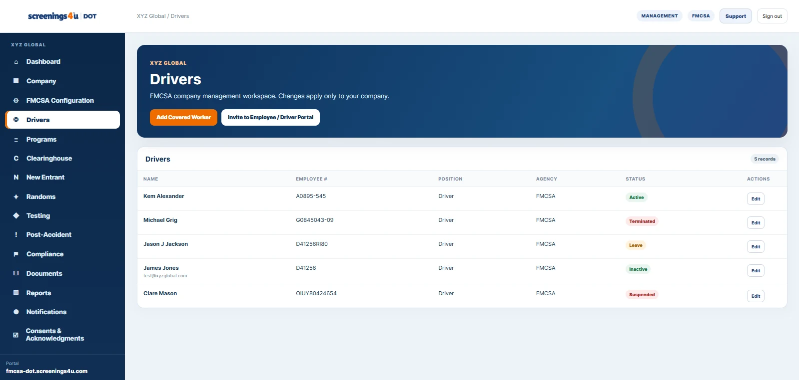

This article focuses on how to organize the work inside a DOT program. It is operational guidance for using a structured workforce and compliance system; it is not a substitute for the rules or official agency guidance that apply to your organization.
Agency assignment comes first
The same employer can have very different compliance workflows depending on the transportation work being performed. Capturing the applicable DOT agency at the employer and worker level makes downstream configuration more precise.
Use the agency's own workforce language
A trucking company may think in terms of drivers, while an aviation employer may think in terms of flight crews, maintenance personnel, dispatchers, or other covered functions. Using the correct workforce terminology makes the portal easier for the customer to understand.
Keep positions structured
A structured position catalog is more useful than a free-text job-title field alone. The organization can still store the company's internal job title, but the regulated position or covered function should also be represented in a consistent way.
Configure programs and pools from the agency context
Programs, random pools, selections, and testing workflows should inherit the agency context rather than asking administrators to recreate it on every transaction.
Keep agency content separate from legal interpretation
Operational software can organize records, workflows, and agency-specific terminology. Regulatory applicability and legal interpretation should still be confirmed against the rules and official guidance that apply to the organization.